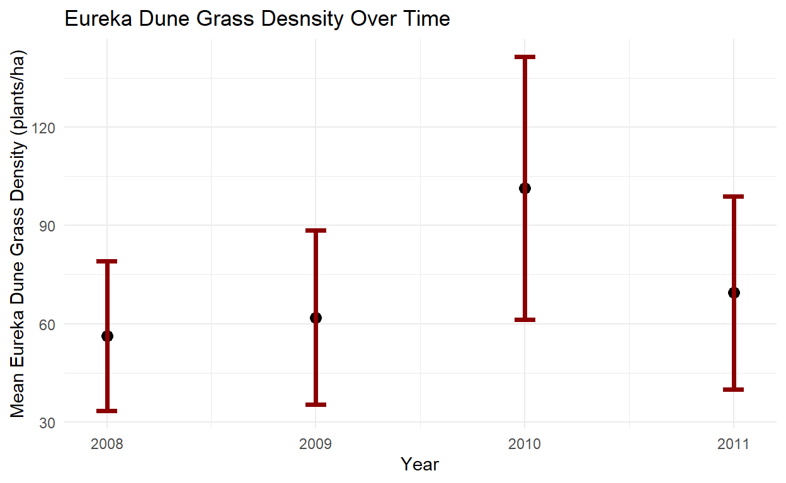
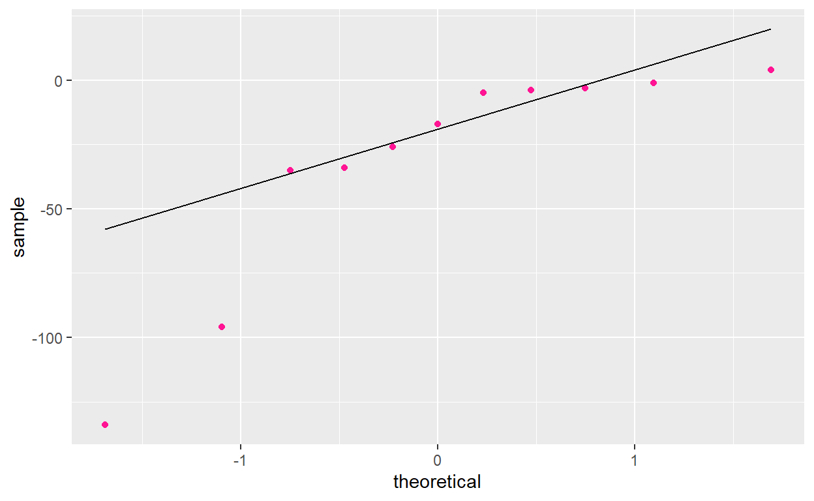
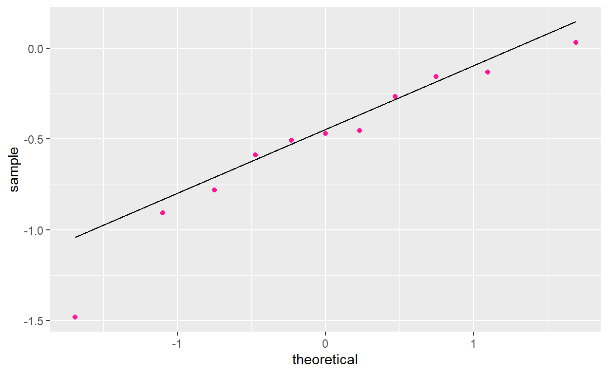
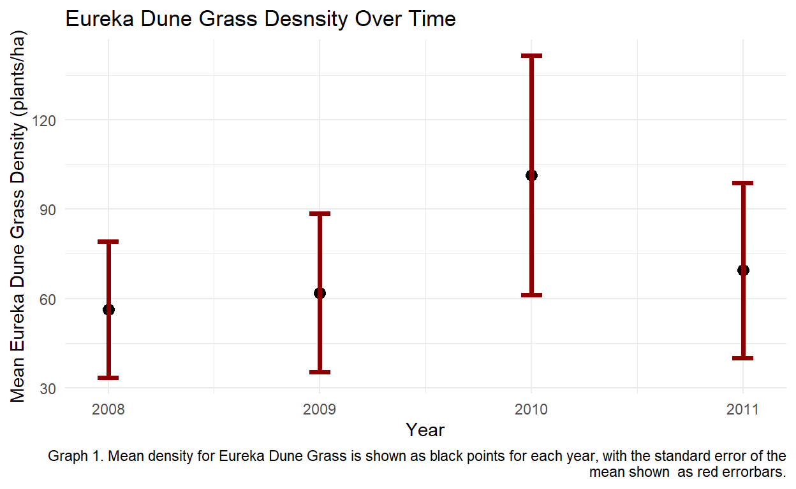

This analysis was completed in R Studio 1.4 to determine population growth rate trends in Eureka dune grass, which is a rare bunchgrass that is only found on 3 sand bunes in Death Valley National Park.
1. Give three reasons why a plant or animal might be patchily distributed like the Eureka dune grass. For each, describe whether you would expect the location of the high-density patches to be consistent from year to year (3 points).
Particular biotic conditions (vegetation, animal species, fungi, etc) may be needed for a particular species, which would distribute the individuals to those particular areas. For example, certain bird species may only forage or nest in one or two tree species so they would be located in those individual trees and nowhere else in a landscape. In this case the location of the high-density patches would likely stay consistent from year to year unless there is a disturbance that disrupts the biotic condition(s) (i.e wildfire).
Particular abiotic conditions (temperature, slope, substrate, nutrients, etc) may be needed for a particular species, which would distribute the individuals to those particular areas. For example,a plant that needs a minimum amount of a certain nutrient, like phosphorus, to grow will only grow in areas where the substrate holds at least the minimum amount of phosphorous needed for that plant. In this case the high-density patches are likely to stay consistent from year to year.
Certain species may grow in aggregations and/or live in smaller subdivided social groups. Certain species are adapted to grow or live in groups for reasons such as protection, social behaviors, reproduction, etc. In this case the high-density patches are likely to change locations from year to year (although over a much longer time scale for plants rather than animals).
2. Read in the data, and calculate the mean and standard error of Swallenia density (plants/ha) in each year. Make a plot showing the means as points and the standard errors as error bars. Based on this plot, do you think that the Swallenia population density has changed over time? (2 points)
dunegrass <- read.csv("Swallenia_long.csv")
dunegrass_mean <- dunegrass %>%
group_by(year) %>%
summarise(sum = sum(count),
mean = mean(count),
sd = sd(count, na.rm = TRUE),
se = sd(count) / sqrt(n()))
dunegrass_mean
# A tibble: 4 x 5
year sum mean sd se
* <int> <int> <dbl> <dbl> <dbl>
1 2008 619 56.3 76.0 22.9
2 2009 681 61.9 88.4 26.7
3 2010 1115 101. 133. 40.2
4 2011 764 69.5 97.7 29.4ggplot(data = dunegrass_mean, aes(x = year, y = mean)) +
geom_point(size = 3) +
geom_errorbar(aes(x = year, ymin = mean - se, ymax = mean + se), width = 0.1, color = "darkred", size = 1.3) +
labs(title = "Eureka Dune Grass Desnsity Over Time", x = "Year", y = "Mean Eureka Dune Grass Density (plants/ha)") +
theme_minimal()

Based on this plot, I do think that the Swallenia population density has changed over time.The population seems to have increased from 2008 to 2010 and then decreased rather drastically between 2010 and 2011.
With four years of data, we can calculate three annual population growth rates (2008-09, 2009-10, and 2010-11). We’ll start with the arithmetic growth rate, which you should recall is the difference in abundance divided by the time interval.
3. Using the mean densities from the prior question, what are the estimated growth rates for each of the three annual timesteps? (1 point)
EGR <- dunegrass_mean %>%
mutate(Estimated_GR = lead(mean) - mean /1 )
EGR
# A tibble: 4 x 6
year sum mean sd se Estimated_GR
* <int> <int> <dbl> <dbl> <dbl> <dbl>
1 2008 619 56.3 76.0 22.9 5.64
2 2009 681 61.9 88.4 26.7 39.5
3 2010 1115 101. 133. 40.2 -31.9
4 2011 764 69.5 97.7 29.4 NA 4. Given the within-year variability in the abundance estimates, we might wonder whether there is statistical evidence that the growth rates are different from zero. A t-test can give us an answer to this. However, you need to decide whether a two-sample t-test or a paired t-test is more appropriate to use. Thinking about the structure of the data, as well as your answers to the first question, choose one of these tests and explain why it is most appropriate. Even if neither is perfect, you still need to choose the “least bad” one. (2 points)
I think a paired t-test is the most appropriate option for this analysis because the growth rates are calculated from the same plots year after year, rather than being from two completely seperate samples. Additionally, the samples are from the same population that are clustered into sampling groups. Thus, each sample is paired and should be treated as such with a paired t-test.
5. Based on your decision in the previous question, use either two-sample t-tests or paired t-tests to evaluate whether there is evidence that the population growth rate was different from zero in each of the three years (you’ll need to run separate tests for each of 2008-09, 2009-10, and 2010-11). Choose a level for \(\alpha\), and justify your choice. Based on the P-values, in which (if any) years can you reject the null hypothesis that the growth rate is zero? (2 points)
dunegrass1 <- read_csv("Swallenia_wide.csv")
count2008 <- dunegrass %>%
filter(year == "2008")
count2009 <- dunegrass %>%
filter(year == "2009")
count2010 <- dunegrass %>%
filter(year == "2010")
count2011 <- dunegrass %>%
filter(year == "2011")
ttest2008_2009 <- t.test(x = count2009$count,y = count2008$count, paired = TRUE, conf.level = 0.95)
ttest2009_2010 <- t.test(x = count2010$count,y = count2009$count, paired = TRUE, conf.level = 0.95)
ttest2010_2011 <- t.test(x = count2011$count,y = count2010$count, paired = TRUE, conf.level = 0.95)
ttest2008_2009
Paired t-test
data: count2009$count and count2008$count
t = 0.98217, df = 10, p-value = 0.3492
alternative hypothesis: true difference in means is not equal to 0
95 percent confidence interval:
-7.15017 18.42290
sample estimates:
mean of the differences
5.636364 ttest2009_2010
Paired t-test
data: count2010$count and count2009$count
t = 2.4508, df = 10, p-value = 0.03421
alternative hypothesis: true difference in means is not equal to 0
95 percent confidence interval:
3.584261 75.324830
sample estimates:
mean of the differences
39.45455 ttest2010_2011
Paired t-test
data: count2011$count and count2010$count
t = -2.4037, df = 10, p-value = 0.03708
alternative hypothesis: true difference in means is not equal to 0
95 percent confidence interval:
-61.487703 -2.330479
sample estimates:
mean of the differences
-31.90909 I chose a 95% confidence interval (alpha 0.05) because this means that if the same population is sampled on numerous occasions the resulting intervals would contain the true population parameter in approximately 95 % of cases. The null hypothesis that the growth rate is zero is rejected for the growth rates between 2009-2010 (p = 0.034) and 2010-2011 (p = 0.037). This means that there statistically was a difference between the Eureka dune grass growth rate between those years. For the years 2008-2009 (p = 0.349) the null hypothesis that the growth rate is zero is retained. This means that there is no statistical evidence that the growth rate of the Eureka dune grass between year 2008 and 2009 changed (were different).
6. What assumptions does the t-test make about the normality of the data (note that this differs for the 2-sample and paired tests)? Do your data satisfy those assumptions? If not, how might that affect the interpretation of your results? (2 points)
diff2008_2009 <- select(dunegrass1, "plot", "count_2008", "count_2009") %>%
mutate(difference = count_2009 - count_2008)
diff2009_2010 <- select(dunegrass1, "plot", "count_2009", "count_2010") %>%
mutate(difference = count_2010 - count_2009)
diff2010_2011 <- select(dunegrass1, "plot", "count_2010", "count_2011") %>%
mutate(difference = count_2011 - count_2010)
Hist_2008_2009 <- ggplot(data = diff2008_2009, aes(x = difference)) +
geom_histogram(fill ="darkgreen")
Hist_2009_2010 <- ggplot(data = diff2009_2010, aes(x = difference)) +
geom_histogram(fill ="darkslateblue")
Hist_2010_2011 <- ggplot(data = diff2010_2011, aes(x = difference)) +
geom_histogram(fill ="deeppink")
qq_2008_2009 <- ggplot(data = diff2008_2009, aes(sample = difference)) +
geom_qq(color = "darkgreen") +
stat_qq_line()
qq_2009_2010 <- ggplot(data = diff2009_2010, aes(sample = difference)) +
geom_qq(color = "darkslateblue") +
stat_qq_line()
qq_2010_2011 <- ggplot(data = diff2010_2011, aes(sample = difference)) +
geom_qq(color = "deeppink") +
stat_qq_line()
Hist_2008_2009
Hist_2009_2010
Hist_2010_2011
qq_2008_2009
qq_2009_2010
qq_2010_2011

A paired t-test assumes that the difference of each pair is normally distributed. The data does seem to satisfy normal distribution between years 2008 and 2009. But the data does not satisfy the normal distribution assumption between 2009 and 2010 because it is positively skewed or between 2010 and 2011 because it is negatively skewed. This non-normal distribution increases the chance of false positive t-test results.
7. For each of the three years, use the t-test (the same type that you previously chose), applied to the log transformation of the abundance data, to calculate the mean value of \(r_t\) and test the null hypothesis that it is zero. Based on the P-values, in which (if any) years can you reject the null hypothesis that the growth rate is zero? (2 points)
log_transform <-dunegrass1 %>%
mutate(log_08 = log(count_2008),
log_09 = log(count_2009),
log_10 = log(count_2010),
log_11 = log(count_2011)) %>%
select(plot, log_08:log_11)
GGR <- dunegrass_mean %>%
mutate(lamda_t = lead(sum)/sum) %>%
mutate(R_T = log(lamda_t))
log2008 <- log_transform %>%
select("log_08")
log2009 <- log_transform %>%
select("log_09")
log2010 <- log_transform %>%
select("log_10")
log2011 <- log_transform %>%
select("log_11")
ttestlog2008_2009 <- t.test(x = log2009$log_09,y = log2008$log_08, paired = TRUE, conf.level = 0.95)
ttestlog2009_2010 <- t.test(x = log2010$log_10,y = log2009$log_09, paired = TRUE, conf.level = 0.95)
ttestlog2010_2011 <- t.test(x = log2011$log_11,y = log2010$log_10, paired = TRUE, conf.level = 0.95)
ttestlog2008_2009
Paired t-test
data: log2009$log_09 and log2008$log_08
t = 1.3923, df = 10, p-value = 0.194
alternative hypothesis: true difference in means is not equal to 0
95 percent confidence interval:
-0.1311869 0.5681997
sample estimates:
mean of the differences
0.2185064 ttestlog2009_2010
Paired t-test
data: log2010$log_10 and log2009$log_09
t = 3.6538, df = 10, p-value = 0.004434
alternative hypothesis: true difference in means is not equal to 0
95 percent confidence interval:
0.1515138 0.6251153
sample estimates:
mean of the differences
0.3883146 ttestlog2010_2011
Paired t-test
data: log2011$log_11 and log2010$log_10
t = -4.0395, df = 10, p-value = 0.002363
alternative hypothesis: true difference in means is not equal to 0
95 percent confidence interval:
-0.8041814 -0.2324079
sample estimates:
mean of the differences
-0.5182946 The null hypothesis that the growth rate is zero is rejected for the growth rates between 2009-2010 (p = 0.004) and 2010-2011 (p = 0.002). This means that there statistically was a difference between the Eureka dune grass growth rate between those years. For the years 2008-2009 (p = 0.194) the null hypothesis that the growth rate is zero is retained. This means that there is no statistical evidence that the growth rate of the Eureka dune grass between year 2008 and 2009 changed (were different). These results are consistent with the results of the untransformed t-test.
8. Do the log-transformed data fit the normality assumptions of the t-test better or worse than the untransformed data? On the basis of this comparison, are you more confident about the statistical results for the arithmetic growth rate or the log growth rate? (2 points)log_transform1 <- pivot_longer(log_transform,
cols = starts_with("log"),
names_to = "year")
difflog2008_2009 <- select(log_transform, "plot", "log_08", "log_09") %>%
mutate(difference = log_09 - log_08)
difflog2009_2010 <- select(log_transform, "plot", "log_09", "log_10") %>%
mutate(difference = log_10 - log_09)
difflog2010_2011 <- select(log_transform, "plot", "log_10", "log_11") %>%
mutate(difference = log_11 - log_10)
Histlog_2008_2009 <- ggplot(data = difflog2008_2009, aes(x = difference)) +
geom_histogram(fill ="darkgreen")
Histlog_2009_2010 <- ggplot(data = difflog2009_2010, aes(x = difference)) +
geom_histogram(fill ="darkslateblue")
Histlog_2010_2011 <- ggplot(data = difflog2010_2011, aes(x = difference)) +
geom_histogram(fill ="deeppink")
qqlog_2008_2009 <- ggplot(data = difflog2008_2009, aes(sample = difference)) +
geom_qq(color = "darkgreen") +
stat_qq_line()
qqlog_2009_2010 <- ggplot(data = difflog2009_2010, aes(sample = difference)) +
geom_qq(color = "darkslateblue") +
stat_qq_line()
qqlog_2010_2011 <- ggplot(data = difflog2010_2011, aes(sample = difference)) +
geom_qq(color = "deeppink") +
stat_qq_line()
Histlog_2008_2009
Histlog_2009_2010
Histlog_2010_2011
qqlog_2008_2009
qqlog_2009_2010
qqlog_2010_2011

Based on these results I am more confident in the statistcal results of the log growth rate, rather than the arithmetic growth rate. Although the histogram with the most normal distribution is of the untransformed 2008-2009 data, when reviewing the quantile-quantile plots for normality the best fit lines were in all three of the plots of the log values of the data.
9. Write a short paragraph to the park superintendent describing your finding about the changes (if any) to the dune grass population over the period from 2008 to 2011. Do not report every analysis you ran; instead, report your conclusions based on what you consider the best (or most robust) analysis. You may want to include a graph or table to support your explanation. (4 points)
The most important findings of our analysis showed that there were statistically significant changes in grow rates between the years of 2009-2010 and 2010-2011 for the Eureka Dune Grass (Swallenia alexandrae). The geometric and arithmetic growth rates between 2009 and 2010 were 0.493 and 39.45, respectively, which tell us that the population increased between 2009 and 2010. The population growth rates between 2010 and 2011 however showed a different trend. The geometric and arithmetic growth rates between years 2010 and 2011 were -0.37804189 and -31.909091, respectively. This negative growth rate means that the Eureka Dune Grass population declined between 2010 and 2011.These differences were statistically tested using a paired t-test and were considered statistically significant in both cases. The difference in the mean population densities between years 2009, 2010, and 2011 can be clearly seen in Graph 1 below. The question that remains now is, what environmental changes or disturbances were the causes of the significant rise and decline of the Eureka Dune Grass population between 2009 and 2011?
